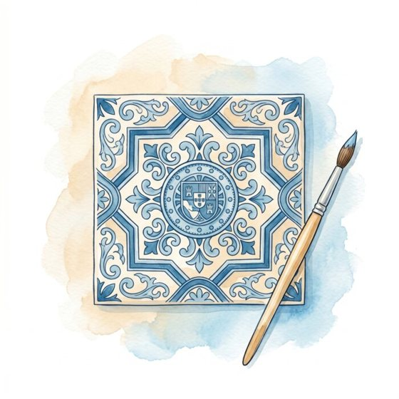
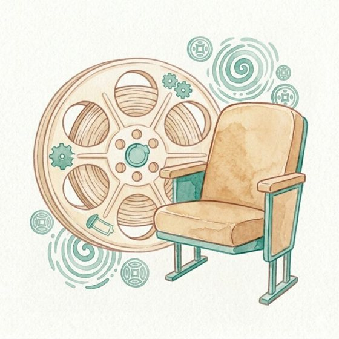
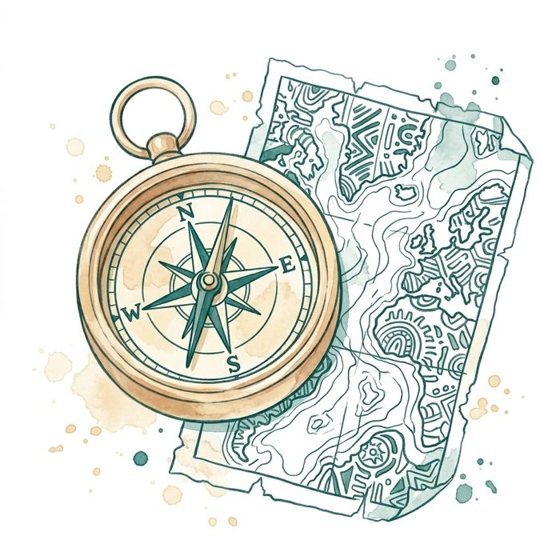
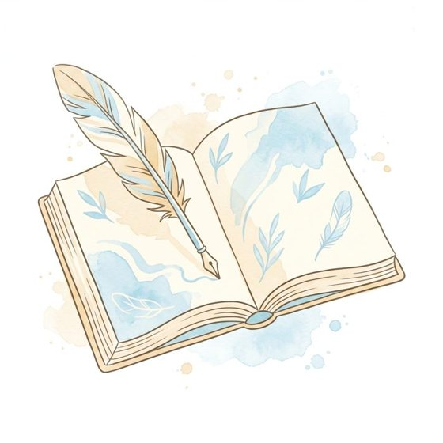
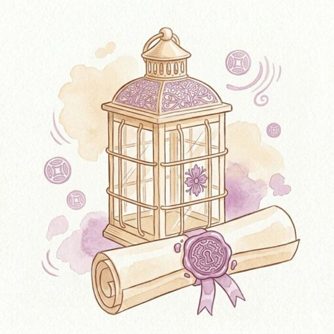
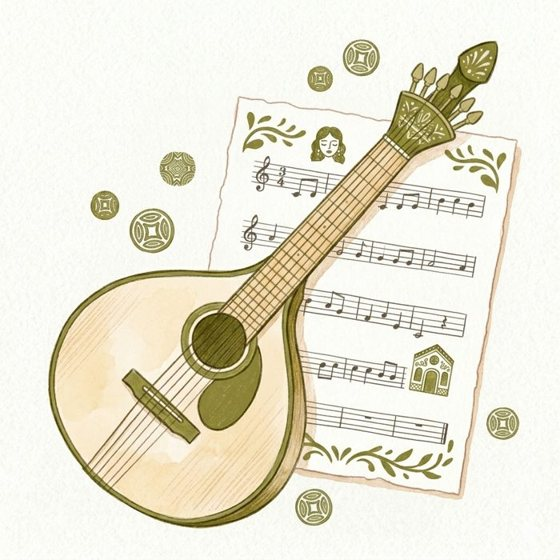

Biblioteca · Library
Choose a theme
Everything you need, organised by what matters to you.
Choose a theme or dive into the 100 Histórias. Your materials are waiting inside, calibrated to your level. As you progress, we reassess you and unlock the next level across all themes.

Arts
Azulejos, painting, sculpture: visual Portugal across the centuries.
Choose this theme →
Cinema
Portuguese directors, films, and the stories they tell about the country.
Choose this theme →
History
Twelve eras, one nation: Portugal's story from the beginning to today.
Choose this theme →
Literature
Poets, novelists, and the words that made Portuguese what it is.
Choose this theme →
100 Histórias
Fifty legends and fifty women: the stories that made Portugal.
Choose this theme →
Music
Fado, folk, and contemporary sound: the music Portugal lives by.
Choose this theme →Inside 100 Histórias
Lendas e Milagres de Portugal
50 legends that explain Portugal's symbols, landmarks, and traditions.
Mulheres de Portugal
50 stories of the women who shaped the nation.